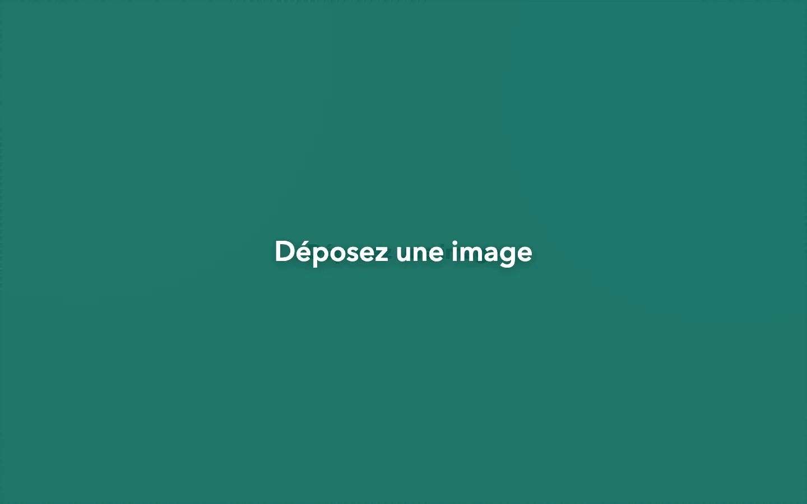
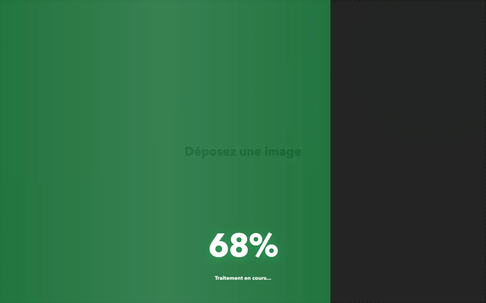

Store 3 · interface réelle
Déposez l’image. Gardez le sujet.
ImgRalph ne vous installe pas dans un atelier compliqué. La page entière est la zone de dépôt, le traitement remplit l’écran, puis le bouton devient « Télécharger ».
PNG, JPG ou WebP en entrée · PNG transparent en sortie
Déposez une image
Preuve
Trois écrans, un seul geste.


Scène
La page devient la barre de progression.
Cette scène illustre le résultat avec une voiture synthwave. La progression est simulée et locale à cette page : aucune image n’est envoyée pendant la visite.
Image chargée. Lancement du détourage…
Ce que l’app fait vraiment
Deux sources, trois modèles, un PNG.
- 01Source
- remove.bg via API, ou local dans le navigateur avec ONNX et rembg-web. En mode API, l’image est envoyée au service ; en mode local, dépendances et modèle sont téléchargés.
- 02Modèle
- u2net pour la qualité, u2netp pour la rapidité, u2net_human_seg pour les personnes. Le choix reste celui de l’interface réelle.
- 03Détourage et export
- Le curseur va de -50 à 200, le contenu est recadré automatiquement avec une bordure de 1 px, et l’export est un PNG transparent.
Le sujet. Et c’est tout.
Ouvrez l’outil, déposez une image et laissez ImgRalph faire le reste.